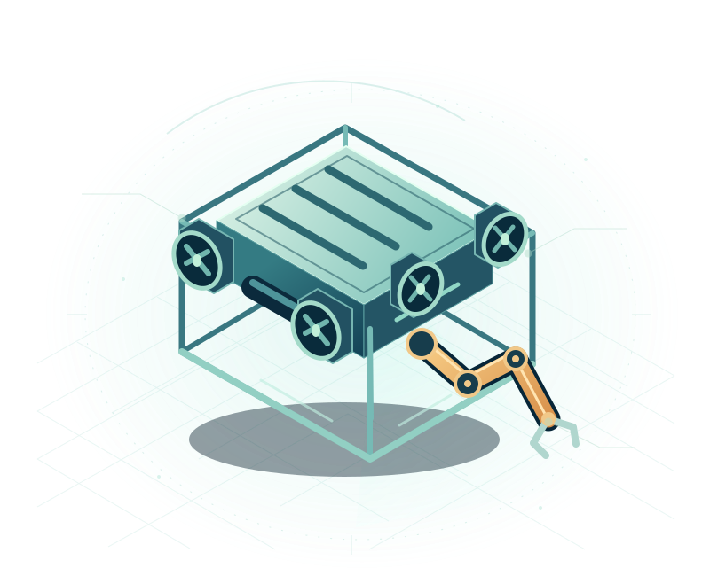

THE ENVIRONMENT
One simulation.
Open to more teams.
The planned environment builds on TU Hamburg’s ROS 2/Gazebo teaching framework, with a common small-scale underwater vehicle-manipulator system (UVMS).
ICRA 2027 · UNDERWATER ROBOTICS
Your approach. A shared simulation.
No underwater hardware required.
Develop and compare methods for a small-scale underwater vehicle with a manipulator. Build on a common setup, then bring what you learn to the workshop.
Inside the challenge
01 / THE PLANNED SETUP
Improve an individual component or rethink the whole system. The common setup makes it possible to compare what works and understand what does not.
THE ENVIRONMENT
The planned environment builds on TU Hamburg’s ROS 2/Gazebo teaching framework, with a common small-scale underwater vehicle-manipulator system (UVMS).
THE STARTING POINT
Two baselines will provide starting points for testing ideas in perception, control, planning and system integration.
THE COMPARISON
A manipulation task and success metrics will let teams compare results. The exact task, scoring and submission rules will accompany the challenge release.
02 / FROM SIMULATION TO DISCUSSION
The challenge feeds directly into the workshop’s Roadblock and Action Roadmap: what can these systems do today, and what should the community tackle next?
See the workshop programmeFEBRUARY 2027 · PLANNED RELEASE
The simulator configuration, task, metrics and baselines are planned for February 2027, subject to workshop acceptance.
BEFORE THE WORKSHOP
Improve a component or the full system and evaluate your approach in the common environment. Participation will not require physical underwater hardware.
AT THE WORKSHOP
The proposal plans posters and short pitches for the top three teams, plus a challenge session to discuss selected results, failure cases and open roadblocks.
03 / TAKING PART
Challenge resources are not available yet. The task specification, evaluation details, submission instructions and deadlines will be published here when released.
Contact us